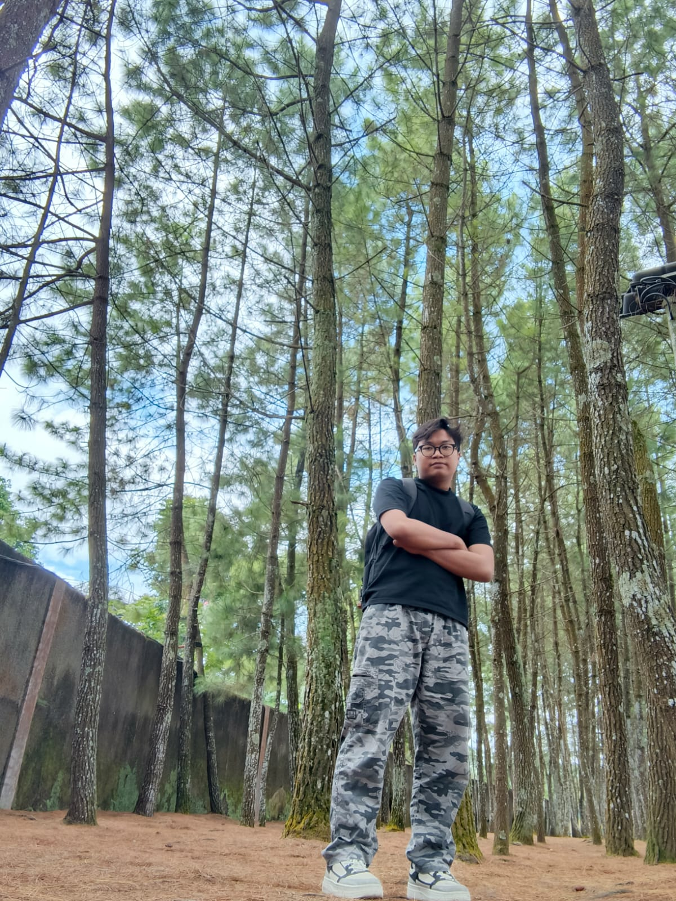

Mochammad Naufal Ramadhan
NIM : 2403015091
Jurusan : Teknik Informatika
Fakultas Teknologi Industri dan Informatika
Deskripsi Diri
Seorang mahasiswa semester 6 yang memiliki ketertarikan besar pada dunia pemrograman web dan pengalaman pengguna. Saya percaya bahwa teknologi yang baik adalah yang mampu menyelesaikan masalah nyata. Saat ini aktif mengerjakan proyek-proyek open source dan terus belajar framework modern seperti React dan Laravel. Saya juga suka berbagi ilmu melalui komunitas kampus.
🎯 Hobi
- Membaca buku teknologi & fiksi ilmiah
- Coding challenge (LeetCode, Frontend Mentor)
- Mendengarkan musik sambil ngoding
- Olahraga bulutangkis
✨ Cita-cita
Menjadi seorang Technical Lead di perusahaan teknologi terkemuka sekaligus membangun startup ed-tech yang membantu generasi muda Indonesia belajar coding dengan cara yang menyenangkan.